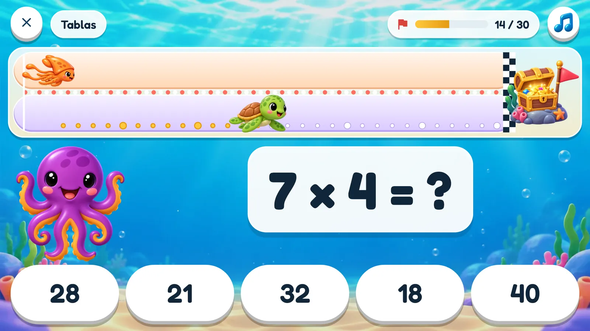
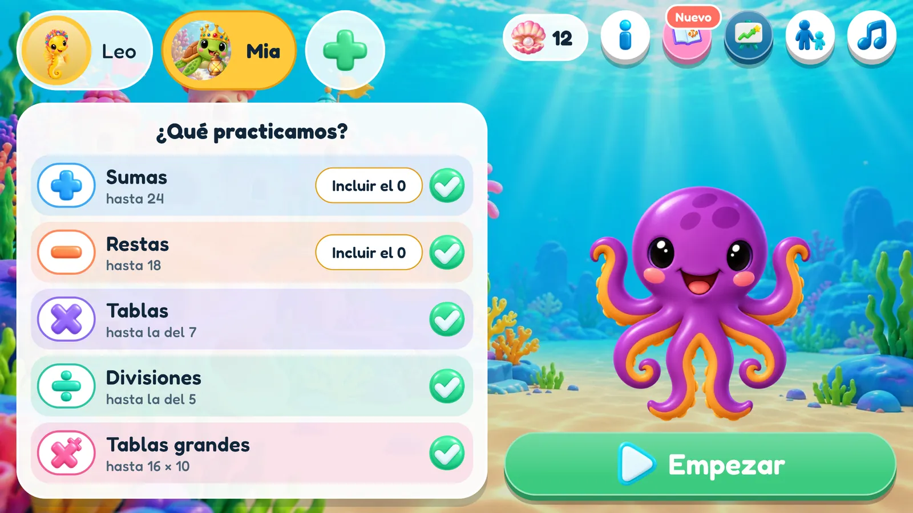
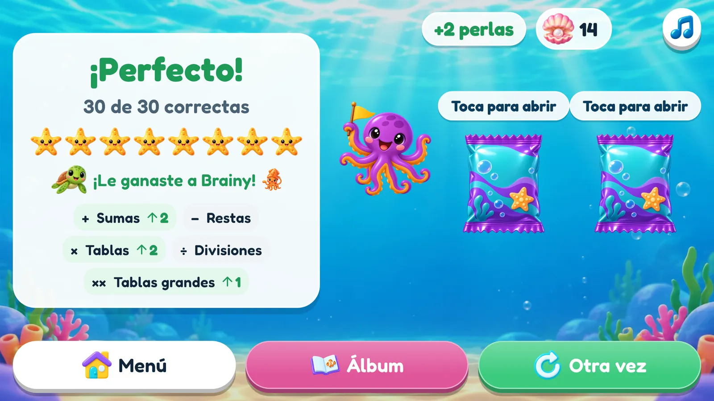
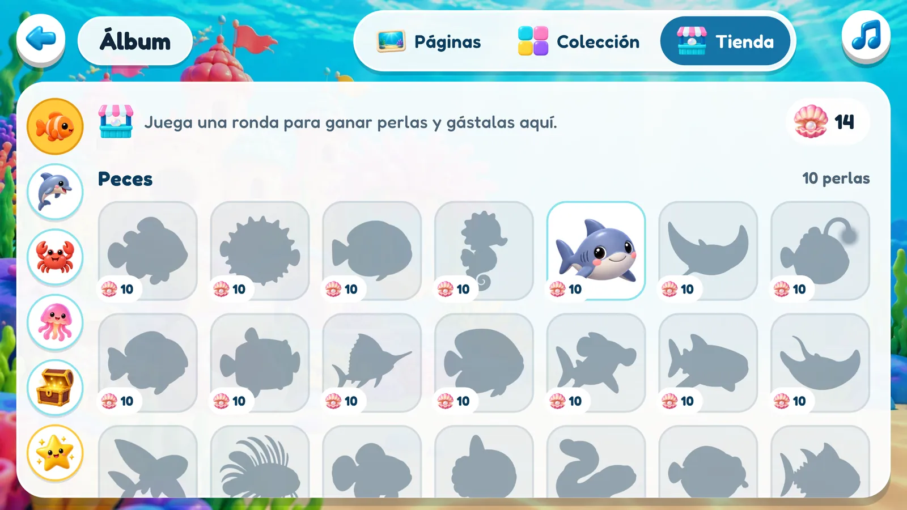
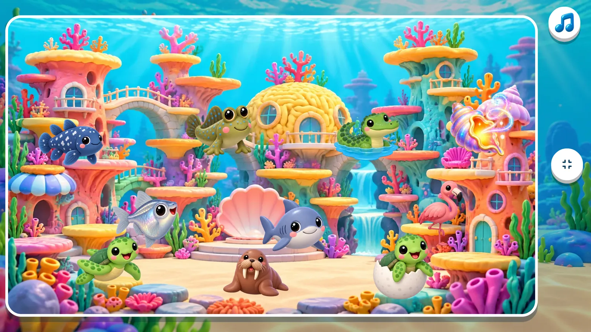
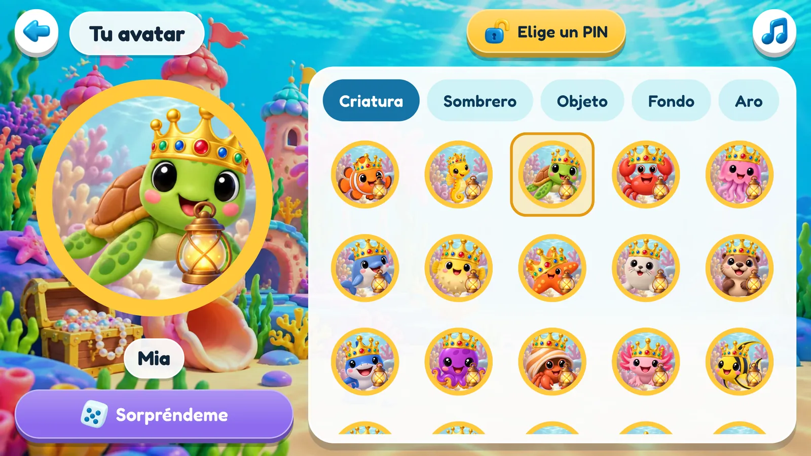
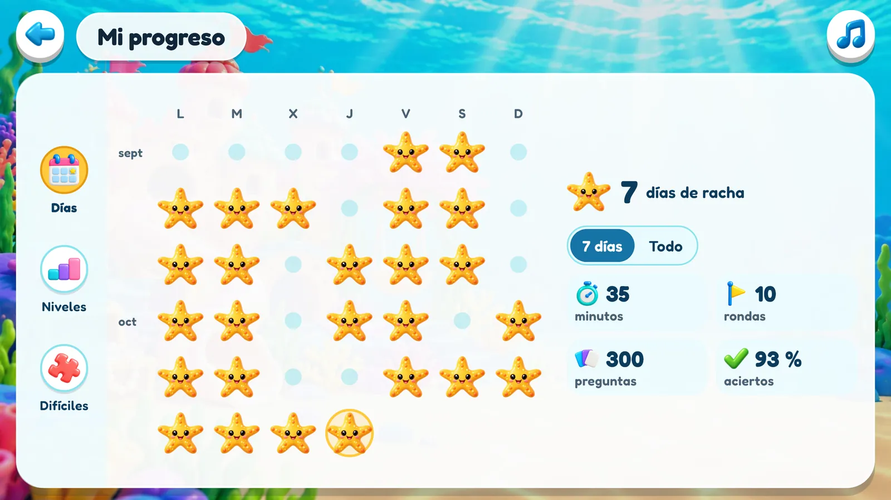
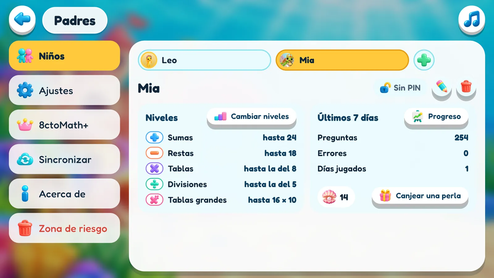

Cálculo mental que se adapta a tu hijo.
8ctoMath es un entrenamiento de cálculo para niños, ambientado en el fondo del mar. Cada ronda es una carrera de treinta preguntas contra el calamar Brainy. El nivel se ajusta solo a tu hijo, los cálculos que le cuestan vuelven más a menudo y con una buena ronda se ganan stickers.


Así es una ronda
Treinta preguntas, una pista por el fondo del mar y un cofre del tesoro al final. Cada respuesta correcta es una brazada hacia adelante, y el calamar Brainy nada por la misma pista.
Aparece una pregunta
De los tipos de cálculo que elegiste, al nivel en el que está este niño.
Elige la respuesta
Hay cinco para elegir. Las incorrectas son errores que los niños cometen de verdad, así que hay que calcular la correcta, no adivinarla.
Avanza nadando
Si acierta, la criatura de tu hijo da una brazada. Si falla, aparece la respuesta antes de la siguiente pregunta.
Brainy también compite
Tarda un poco más de lo que este niño suele necesitar, así que ganarle significa hacer una ronda mejor de lo habitual.

Tu hijo
Compite como la criatura que él mismo eligió. Una brazada por cada respuesta correcta.

Brainy
Nada a un ritmo constante, marcado por las últimas rondas de este niño.

8cto es el entrenador
Espera junto a la pregunta, celebra cada acierto, sufre con cada error y le habla al niño que lleva un rato callado. En voz alta, en español, inglés, alemán o francés.
Cinco tipos de cálculo
Antes de cada ronda puedes elegir cualquier combinación, un tipo o los cinco. Cada uno tiene su propio nivel, así que un niño puede ir muy avanzado en sumas y estar empezando con las divisiones.
Sumas
hasta 10, 20, 100 y más
Restas
nunca por debajo de cero
Tablas
tablas hasta el 12
Divisiones
siempre exactas
Tablas grandes
como 14 × 7

Cada niño, en su nivel
Nadie tiene que adivinar qué nivel es el adecuado, ni ajustarlo. El juego observa cómo va cada ronda y se adapta, sin hacer ruido, mientras el niño simplemente juega.
Siempre la dificultad justa
Cada tipo de cálculo tiene su propio nivel. Sube cuando tu hijo acierta y baja cuando se vuelve demasiado difícil.
Los cálculos difíciles vuelven
El juego recuerda qué cálculos le cuestan a tu hijo y los pregunta más a menudo, y los que ya domina, menos.
Adivinar no sirve
Las respuestas incorrectas que se ofrecen son errores que los niños cometen de verdad, así que hay que calcular la correcta.
Una carrera justa
Brainy tarda un poco más de lo que tu hijo suele necesitar para una ronda, así que ganarle significa ir un poco más rápido de lo habitual. Tanto un niño rápido como uno cuidadoso tienen una carrera que pueden ganar.
Y también empieza en el lugar justo
Un niño nuevo escribe un apodo y dice su edad, y 8cto elige qué cálculos trae la primera ronda y el tamaño de los números. En una o dos rondas, los niveles ya se han ajustado al niño. La edad se usa una vez y nunca se guarda.

Cada brazada vale la pena
Tres premios, cada uno con su propio sentido, y una tienda donde gastar uno de ellos. Ninguno se puede comprar con dinero.

Ocho estrellas de mar
Se enciende una por cada meta alcanzada, desde la mitad de respuestas correctas hasta las treinta.

Perlas
Una por una ronda sin errores y otra por ganarle a Brainy. Se gastan en la tienda de stickers, o un adulto canjea una por un premio acordado en casa.

Stickers
Sin errores: dos stickers. Con un error: todavía uno. Más o menos uno de cada veinte es raro.

La tienda de stickers
Con perlas, tu hijo compra justo el sticker que quiere; uno raro cuesta bastante más. Cada sticker es una silueta hasta que es suyo, así que siempre hay algo para lo que ahorrar.
Doscientos stickers, ocho páginas
Los stickers son la colección. Arrastra uno a una página, gíralo, voltéalo, hazlo más grande, mira la página entera en pantalla completa. La página es del niño y se queda tal como la dejó.


Cinco grupos
Peces · Aletas y plumas · Pinzas, conchas y estrellas · Blanditos y brillantes · Tesoros y cosas. Treinta y seis en cada uno, y la colección cuenta también los repetidos.
Veinte raros
Una tortuga dorada, un kraken bebé, una ballena arcoíris, una sirena. Con 8ctoMath+, más o menos uno de cada veinte stickers ganados sale de esta serie.
Entre hermanos
Los niños de un mismo dispositivo pueden regalarse stickers. Uno repetido, o justo el que el otro lleva tiempo buscando.



Sé tu propia criatura
Cada niño crea su propio avatar: una criatura marina, un sombrero, un objeto en la mano, un fondo y un color de aro. Aparece en su botón del menú, y es quien nada en la carrera.


Veinte criaturas
Un pez payaso, un caballito de mar, una nutria marina, un tiburoncito, una morsa, un ajolote. Hasta 8cto. Nueve sombreros, nueve objetos, nueve fondos y un «Sorpréndeme» para quien no se decide.
Cada sticker raro abre un retrato
Con el sticker de la tortuga dorada, puedes ser la tortuga dorada. Veinte retratos, uno por cada sticker raro, y solo el sticker los abre.
Tú en la carrera
La criatura que eligió el niño es la que nada contra Brainy, brazada a brazada, mientras 8cto entrena desde un lado.

8cto y Brainy hablan
Los personajes se mueven y hablan. 8cto celebra cada acierto, sufre con cada error y le habla al niño que lleva un rato callado. Brainy presume o hace pucheros en la meta. Voces reales, en español, inglés, alemán o francés.
Voces
Decenas de frases, así que pasa un buen rato antes de que tu hijo las haya oído todas.
Música y sonidos
Una melodía original para el juego y un botón de música en cada pantalla. Los efectos de sonido se desactivan por separado.
Movimiento reducido
Menos animaciones, para niños a los que el movimiento distrae. Los personajes se quedan; los adornos se van.
Hecho para tablets
Pantalla horizontal, botones grandes y, para el apodo, un teclado de letras propio en lugar del teclado del sistema. También funciona bien en el teléfono.
Para padres
Todo lo que es para adultos está detrás de una pequeña puerta: un número en letras que hay que escribir en cifras. Fácil para ti, aburrido para un niño de seis años.
Hasta seis niños
Un dispositivo, una familia. Cada niño tiene sus propios niveles, perlas, stickers y avatar.
Un PIN para cada niño
Cuatro cifras que el niño puede elegir, para que nadie más juegue en su lugar. ¿Lo olvidó? Tú lo quitas.
El progreso de cada niño
Los días practicados y la racha, los minutos, la evolución de cada nivel y los cálculos que aún le cuestan. Los niños también pueden abrirlo.
Un recordatorio diario
Si quieres, 8cto avisa una vez al día, a la hora que elijas, a los niños que aún no han jugado.
Niveles a mano
Se ajustan solos, pero si uno es claramente demasiado fácil o difícil, puedes cambiarlo tú.
Canjear una perla
Quita una perla del montón cuando des en casa el premio que valía.
Sincronizar
Inicia sesión y la familia es la misma en todos los dispositivos, con una copia de seguridad guardada en Suiza. Forma parte de 8ctoMath+.
Cuatro idiomas
Español, English, Deutsch o Français. Sigue el idioma del sistema, o eliges tú. Toda la app, voces incluidas, habla los cuatro.


Nada sale del dispositivo
8ctoMath es para niños, así que no recopila nada. Es un juego completo incluso en modo avión.
- ✓Sin anuncios y nada que un niño pueda comprar. La única compra está detrás de la puerta para adultos.
- ✓Sin análisis de uso, sin rastreo, sin identificador de publicidad, sin informes de fallos.
- ✓Sin cámara, micrófono, ubicación, contactos, fotos ni archivos.
- ✓Un apodo, no un nombre. Sin fecha de nacimiento, sin correo electrónico, sin foto. La edad se usa una vez y nunca se guarda.
- ✓Funciona sin conexión y no necesita cuenta. La sincronización es opcional, y su copia de seguridad se guarda en Suiza.
- ✓Eliminar el perfil de un niño, o todos los datos, lleva unos pocos toques, y desaparece de todas partes.
Todos los detalles están en la política de privacidad, y cómo eliminar los datos se explica en la política de eliminación de datos.
Las matemáticas son gratis. Los extras, un solo pago.
La versión gratuita tiene todas las matemáticas: todos los tipos de cálculo, la carrera y los niveles que se ajustan a tu hijo son los mismos. 8ctoMath+ abre el resto de la colección. Un solo pago, sin suscripción, para todos los niños del dispositivo.
8ctoMath
Todo el juego, para hasta seis niños.
- Los cinco tipos de cálculo, la carrera y los niveles que se adaptan
- Estrellas de mar, perlas, la tienda de stickers y regalos entre niños
- Los cinco primeros stickers de cada grupo
- Dos páginas del álbum: Arrecife de coral y Barco hundido
- Cinco criaturas y algunos sombreros, objetos y fondos
- El progreso de cada niño en los últimos siete días
- El PIN de cada niño, el recordatorio diario, el área de Padres y los cuatro idiomas
8ctoMath+
Todo lo de la versión gratuita, y el resto del mar.
- Los doscientos stickers, los veinte raros incluidos
- Las ocho páginas del álbum
- Todas las criaturas, sombreros, objetos y fondos para el avatar
- Todo el progreso de cada niño, no solo los últimos siete días
- Sincronizar: una copia de seguridad de toda la familia, al día en todos los dispositivos con la sesión iniciada en la misma cuenta
- Para todos los niños del dispositivo, y es tuyo para siempre
Se compra en Google Play, detrás de la puerta para adultos. Lo que un niño ha ganado nunca se le quita: el avatar que creó y la página que llenó siguen siendo suyos.

Ven y compite contra Brainy.
8ctoMath se descarga gratis en Google Play, para tablets y teléfonos Android. ¿Preguntas, ideas, un cálculo que no cuadra? Escríbenos.